Most of the photos displayed here illustrate mainly Sikh immigration owing to
the fact that early settlement from Punjab was predominantly Sikh. In the early
part of this century all immigrants from India were indiscriminately called
"hindoo" or "hindu" regardless of religious affiliation. The term "hindoo" was
also sometimes used in a pejorative sense for anyone from that continent.
Permission to reproduce any of these photographs must first be obtained from the
archive shown in the photo credits for each photo.
Please contact T. S. Sibia
Click on thumbnail to obtain a larger image.
1893 - Written in barely legible text at the bottom of the
picture you will find: "1st Punjaub Cavalry & 1st Contingent - Indian
Horse S78 F.G.O.S." (Source: Gulinder S. Gill) Bhai Sarain Singh
Sardarni Prakash Kaur Malik (next to Sardar Malik) and
her daughter at the Victoria Gurudwara when Sardar Malik visited there in
1948 as India's first High Commissioner to Canada.
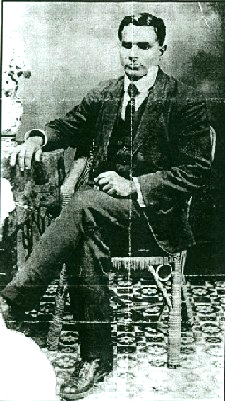 Seated - Bhai Bhag Singh, Prof.Teja Singh, Bibi Bishan Kaur (wife of
Prof. Teja Singh) and Bhai Balwant Singh. Childre: Mukand Singh and Hari
Singh (without turbans)- sons of Pro. Teja Singh. Sikh laborers in Vancouver 1900 ~ 1910 Sikh laborers in Vancouver 1900 ~ 1910 Sikh with two bagsin Vancouver 1900 ~ 1910
Return to Pioneer home page
Canada
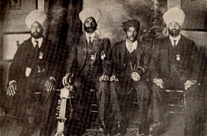
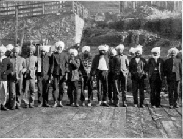
Mill Workers - Retired Sikh Soldiers from Shanghai or Hong Kong (Photo source: A history book of Sikhs in Canada and California by Dhillon, Mahinder Singh. pp. 36)
1906. Among the earliest Sikhs to arrive in Vancouver. (Photo source: in "Canada's New Immigrants", by J.
Barkley Williams and Saint N. Sing. Canadian Magazine, 28:383,1906)
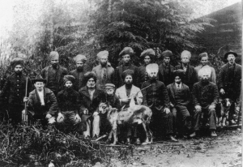
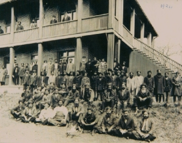
1907? Caption reads: "Group of Sikhs who are
employed in one of the lumber mills at Port Moody, British Columbia. Most
of these men are ex-soldiers and are hardy and courageous" originally
appearing in the article, "The Hindu Invasion", by Fred Lockley,
Pacific Monthly, May 1907, pp. 590-594. (Courtesy Bancroft Library,
University of California).
1924. Sikh Temple at 1210 Topaz Avenue,
Victoria, B.C., Canada. (Photo courtesy of Dr. Manmohan S. Wirk, Victoria, B.C.).
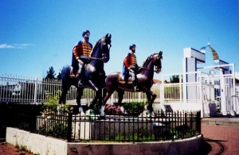
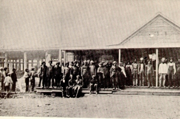
Monument at the Vancouver Gurdwara to first soldier Sikhs in Vancouver. (Photo by author 1997)
1900's. Workers at the Canadian Western
Lumber Company, New Westminster, B.C., probably lining up for pay. (Photo
Source: A history book of Sikhs in Canada and California by Dhillon,
Mahinder Singh. pp. 175.)
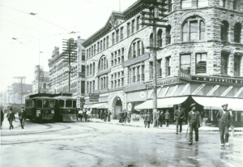
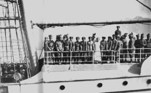
1908. New Westminster Street, Vancouver,
B.C. {Photo VPL 5236, Courtesy Vancouver Public Library (VPL.)}
1897. Hong Kong Regiment visiting
Vancouver, en route to London to celebrate Queen Victoria's Diamond
Jubilee, 1897. On board was also a group of Chinese and Japanese
immigrants and Sikh military.(Photo VPL 3027 Courtesy VPL.)
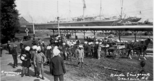
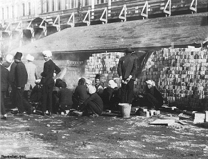
1907. East Indian immigrants (mostly Sikhs) landing in Canada at the CPR Pier, loading possessions onto horse-drawn wagons.(Photo VPL 9426, Courtesy VPL.)
1905. Arrival of the first Hindus in Vancouver, November 1905, camped on Hastings Street between Abbott and Carrall Streets. The temperature was below freezing. (CVA Port 1551 N862 Courtesy City of Vancouver Archives.)
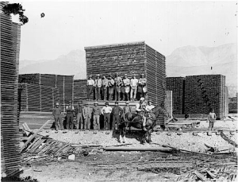
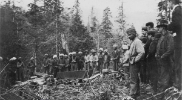
Piles of lumber being air-dried in a lumber yard. Sikh is on horseback. (Photo 14264 Courtesy VPL.)
1907. Funeral for first Sikh who died in
Vancouver in 1907. No permission was granted by the mayor or others. They
took the deceased to a distant forest in the middle of the night and
cremated the body in the morning. (Photo 13291 Courtesy
VPL.)
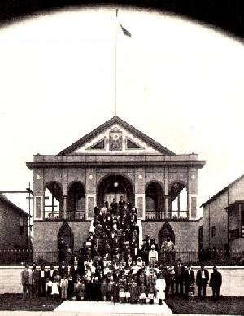
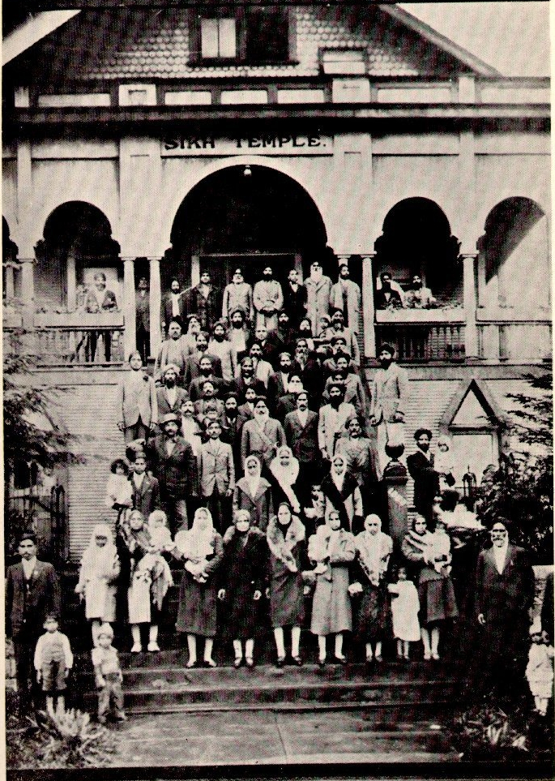
1936. (Opened January 19, 1908.) A gathering
at the Vancouver Sikh Temple, 1866 West Second Avenue, in 1936. Later
demolished and rebuilt on a different site in 1970.(Source: The Voyage
of Komagata Maru, by Hugh Johnston, a plate before page 47. The author
is also trying to find another picture. Second Picture Source: A history
book of Sikhs in Canada and California by Dhillon, Mahinder Singh. pp. 53)
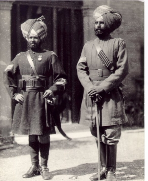
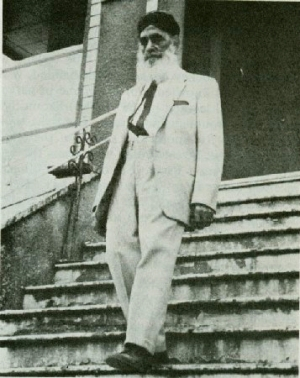
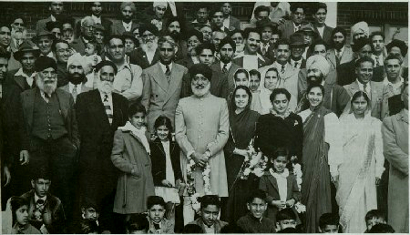
Amar Singh Sangh came to Canada May 21, 1914. Died Jan. 14, 1919
Standing: (from
left) - Bhai Raja Singh Barian, Bhai Arjan Singh Malak, Bhai Sarnagat
Singh, Bhai Hari Singh (Granthi) and Bhai Kartar Singh Nawan Chand.
University of
Washington Libraries, Special Collections.
Negative no: UW 18745
University of
Washington Libraries, Special Collections.
Negative no: UW
18744
University of
Washington Libraries, Special Collections.
Negative no: UW
15673
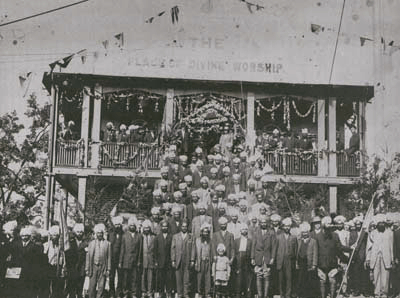
Sikh Temple, 2nd Avenue, Vancouver, B.C., Canada. build in
1907.(now replaced)
A cartoon in a Toronto newspaper 50 years back depicting the religious and linguistic vagries of India.
Contact T.S. Sibia
tssibia@sikhpioneers.net
{kind=link}
{kind=link}
{kind=link}
{kind=link}
{kind=link}
{kind=link}
{kind=link}
{kind=link}
{kind=link}
{kind=link}
{kind=link}
{kind=link}
{kind=link}
{kind=link}
{kind=link}
{kind=link}
{kind=link}
{kind=link}
{kind=link}
{kind=link}
{kind=link}
{kind=link}
{kind=link}
{kind=link}